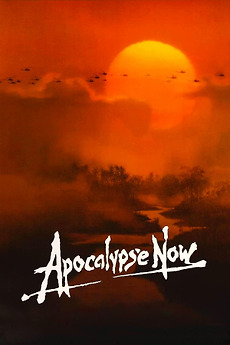

This is a copy of my Letterboxd review of "Apocalypse Now". 5/5 stars.

My Review
In many ways, Apocalypse Now is like many other Vietnam War movies with a group of soldiers surviving through the jungle with some of them dying along the way. However, Coppola realizes the absurdity of the war can't be told by a 1:1 retelling, so he decides to tell the real story where facts are not of importance. Soldiers are shown committing atrocities and then immediately surfing and helping civilians like nothing ever happened and go to a playboy concert right after. They stumble upon Vietnam's past and get reminded that they are not the only people to try and conquer this country.
It all culminates into meeting Colonel Kurtz where you expect to meet some madman who wants to set the whole jungle ablaze. Instead you meet a sane man who wants to set the whole jungle ablaze which is far scarier. Kurtz understands the enemy and how cruel they can be when fighting for their homeland. He also understands the US army is sending children to the war that just want go back home as soon as they can and can hardly find Vietnam on a map. Kurtz realizes that the war is unwinnable, but as a soldier of the USA, he can't give up and admit defeat as that is not his mission. He must continue on and win the war by any means necessary. So to beat his enemy he must become his enemy which is the source of his internal conflict and why he lets himself die in the end. He can't live with himself as a man performing the cruel acts that are necessary to win an ultimately pointless war hence why his last words are "the horror".
I love how Willard realizes what makes Kurtz different from the other American soldiers fighting the war, such as Kilgore, as he travels down the river further into enemy territory. Kilgore, similarly to Kurtz, is also an general with unconventional methods, but he gets the job done despite the many casualties. Willard wonders why he was sent to kill Kurtz and not Kilgore but eventually realizes that Kilgore is fighting on the USA's terms while Kurtz is fighting on the Vietcong's terms. As Willard travels further down the river, as Willard sees how the US is outmatched with an enemy so entrenched in the land, he realizes why Kurtz defected to win the war by any means necessary. The US military can't allow Kurtz to live as it shows that even their sophisticated military can succumb to cruelty and become monsters. Despite Kurtz's guerilla tactics, he still realizes that the war is unwinnable and surmises that the only way for the US to win the war is if a nuclear bomb is dropped and completely destroys the jungle (hence Apocalypse Now).
Other than those two nitpicks, this book was phenomenal and has changed the way I interact with sources of information around me. There is far more to learn from the nature of how content is delivered than the content itself for the most part and only by understanding how different forms of media tend towards different forms of truth can we truly be informed in today's world.
I think the film still ends on an optimistic note however. Willard kills Kurtz and leaves the compound unharmed with Kurtz's men laying down their arms behind him showing how one leader's cruelty does not represent the entire population and that most people can't fuel such hatred themselves and would much rather end the war rather than keep fighting. Willard reciprocates by refusing to call in an air strike on the compound as he leaves.
Coppola's cinematography is amazing in this film. Probably his best ever. My jaw was dropped for the entire third act. I can't believe this movie was made less than 5 years after the Vietnam War ended. This seems like the type of movie to be made nowadays after we know the full extent of our atrocities in the Vietnam War. Adapting the "Heart of Darkness", which is about European colonialism in Africa, to be about America in Vietnam is just genius as the war is strongly tied to imperialism as well.
I love how Kurtz was talked about as though he is a nightmarish legend throughout the movie with the dialogues hyping him up as this genius madman who threw his entire life away to live in the jungle. Marlon Brando played Kurtz amazingly and somehow ad libbed most of his performance.
Whenever I watch a movie with such heavy themes, it's always worth it for me to rewatch the movie entirely to see if there is anything else that I missed or anything that makes sense with this interpretation. At the start of the movie, I kind of just expected a more generic movie and did not think much of Kilgore until I read some other interpretations and really started to compare Kilgore and Kurtz. I definitely need to revisit this in the future.